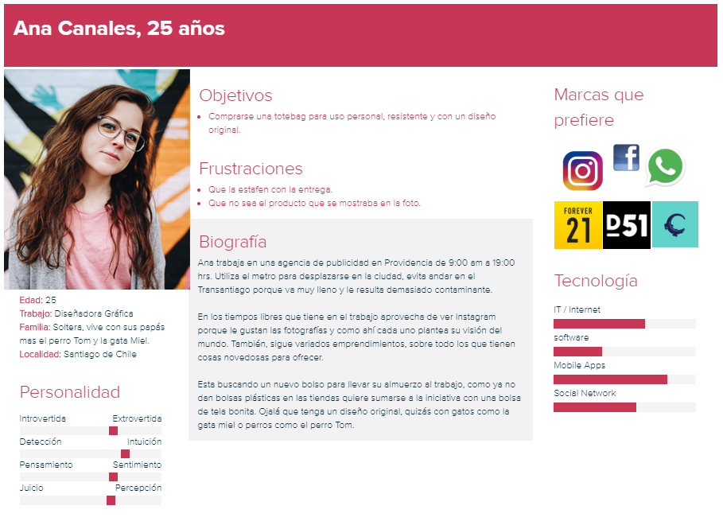
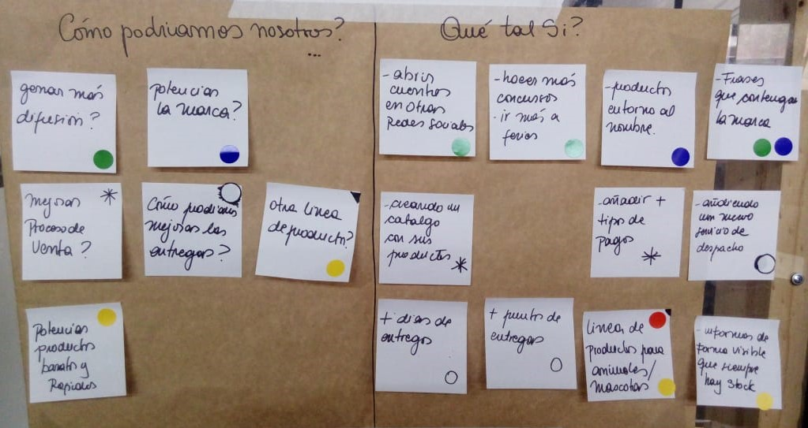

Agosto 2018 | 1 Mes.
Herramientas | Marvel, Adobe Photoshop, Visual Studio Code.
Equipo | Constanza Garcia.
Mala Madre es un emprendimiento de Marlene, el cual lleva alrededor de 6 meses Online en Instagram, donde vende tipos de confecciones, como mochilas, estuches y fundas hechas a mano con técnica de sublimación.
Mi rol era estudiar el caso de mala madre, para generar más ventas, ayudándole con un marketplace y poder agrandar su público.
Participé junto a Constanza, quien también es diseñadora Ux, realizando, entrevistas, encuestas, testing y prototipos, entre otros.
Luego de investigar a MalaMadreStore junto a Entrevistas, nos dimos cuenta que el emprendimiento está inserto solo en una red social: Instagram, esto limita su público a solo los usuarios de esa red.
Las entregas las realiza solo un dia a la semana en un punto de entrega determinado. Esto puede limitar a los usuarios a no poder gestionar una posible entrega.
En sus redes sociales, no existe un catalogo con precios, productos, medidas de productos que permitan a los usuarios ver todo lo que pueden adquirir de la tienda. Esto lleva a que MalaMadreStore, tenga menos venta porque pierde clientes al no dejar clara esta información y que no se dan el trabajo de revisar su Instagram para ver todo lo que hace.
Después de analizar Benchmarks, Entrevistas y encuestas, determinamos que la solución para mejorar su sistema de ventas, es unificar las plataformas de comunicación entre las personas que desean adquirir los productos y la misma dueña del emprendimiento.
Por ello, recomendamos hacer un marketplace a través de un sistema de compra online con carro de compras el que además tendrá en su interfaz un detalle de todos los productos que MalaMadre realiza.
En base a entrevistas y encuestas determinamos un User persona para el cual diseñamos la web.
Despúes de estudiar nuestros usuarios y problemas, determinamos algunas soluciones en base a "How could we..?"
Realizamos algunos prototipos de baja fidelidad, con el cual hicimos varios testing de usuarios. Iteramos y volvimos a realizar prototipos, esta vez de alta fidelidad, para seguir haciendo algunos testing con distintas personas. Iteramos para mejorar nuestro catalogo y que fuera más accesible.
Objetivos:
Durante los test, les dimos como tarea a nuestros usuarios, poder crear una cuenta, o de primera instancia, comprar una funda para notebooks, llenar sus datos y efectuar la entrega del producto.
Comentarios:
Después de varios test, nos dimos cuenta que a los usuarios les costaba trabajo llegar al producto, porque no sabían cómo desplazarse en el catálogo, Iteramos en base a esto y diseñamos un nuevo catálogo.